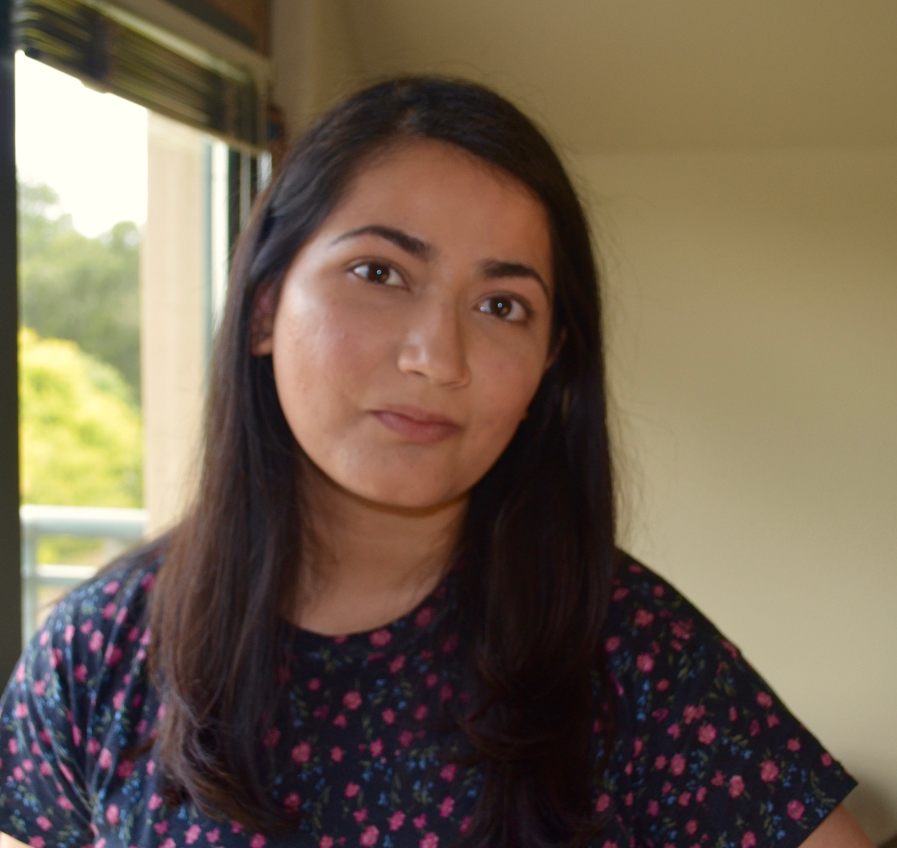

|
Urvashi Khandelwal
I am a Research Scientist at Google AI, where I work on natural language processing and machine learning. My research interests lie in understanding and improving the generalization capabilities of language models and sequence generation models, and building systems that can adapt to new tasks and changing data distributions.
I received my PhD in Computer Science at Stanford University, where I worked with the Stanford Natural Language Processing Group and was advised by Professor Dan Jurafsky. Prior to that, I was an undergraduate student at the University of Illinois Urbana-Champaign, and did some research in information network analysis with Professor Jiawei Han.
Email: urvashik@stanford.edu
Twitter /
Github /
Google Scholar /
CV
|

|
Publications
-
Improving Neural Language Models with Black-Box Analysis and Generalization through Memorization.
Urvashi Khandelwal.
PhD Thesis, Stanford University, 2021.
[bib]
-
Nearest Neighbor Machine Translation.
Urvashi Khandelwal, Angela Fan, Dan Jurafsky, Luke Zettlemoyer and Mike Lewis.
International Conference on Learning Representations (ICLR), 2021.
[bib][code][slides][talk]
-
With Little Power Comes Great Responsibility.
Dallas Card, Peter Henderson, Urvashi Khandelwal, Robin Jia, Kyle Mahowald and Dan Jurafsky.
Empirical Methods in Natural Language Processing (EMNLP), 2020.
[bib]
-
Emergent Linguistic Structure in Artificial Neural
Networks Trained by Self-Supervision.
Christopher D. Manning, Kevin Clark, John Hewitt, Urvashi Khandelwal and Omer Levy.
Proceedings of the National Academy of Sciences (PNAS), 2020.
[bib]
-
Generalization through Memorization: Nearest Neighbor Language Models.
Urvashi Khandelwal, Omer Levy, Dan Jurafsky, Luke Zettlemoyer and Mike Lewis.
International Conference on Learning Representations (ICLR), 2020.
[bib][code][slides][talk]
-
What does BERT look at? An Analysis of BERT's Attention.
Kevin Clark, Urvashi Khandelwal, Omer Levy and Christopher D. Manning.
BlackboxNLP@ACL, 2019.
Best Paper Award.
[bib]
-
BAM! Born-Again Multi-Task Networks for Natural Language Understanding.
Kevin Clark, Minh-Thang Luong, Urvashi Khandelwal, Christopher D. Manning and Quoc V. Le.
Association for Computational Linguistics (ACL), 2019.
[bib]
-
Sample Efficient Text Summarization Using a Single Pre-Trained Transformer.
Urvashi Khandelwal, Kevin Clark, Dan Jurafsky, Lukasz Kaiser.
ArXiv Preprint, 2019. Presented at WeCNLP 2019.
[bib][code][poster]
-
Sharp Nearby, Fuzzy Far Away: How Neural Language Models Use Context.
Urvashi Khandelwal, He He, Peng Qi, Dan Jurafsky.
Association for Computational Linguistics (ACL), 2018.
[bib][code][poster]
-
ClusCite: Effective Citation Recommendation by Information Network-Based Clustering.
Xiang Ren, Jialu Liu, Xiao Yu, Urvashi Khandelwal, Quanquan Gu, Lidan. Wang, Jiawei Han.
ACM SIGKDD Conference on Knowledge Discovery and Data Mining (KDD), 2014.
-
Personalized Entity Recommendation: A Heterogeneous Information Network Approach.
Xiao Yu, Xiang Ren, Yizhou Sun, Quanquan Gu, Brad Sturt, Urvashi Khandelwal, Brandon Norick, Jiawei Han.
International Conference on Web Search and Data Mining (WSDM), 2014.
-
HeteRec: Entity Recommendation in Heterogeneous Information Networks with Implicit User Feedback.
Xiao Yu, Xiang Ren, Yizhou Sun, Brad Sturt, Urvashi Khandelwal, Quanquan Gu, Brandon Norick, Jiawei Han.
ACM Conference on Recommender Systems (RecSys), 2013.
|
|